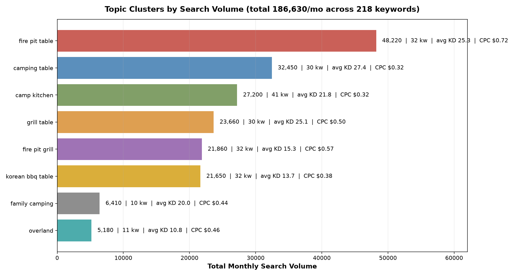
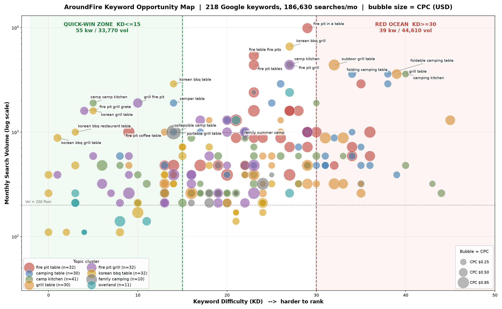
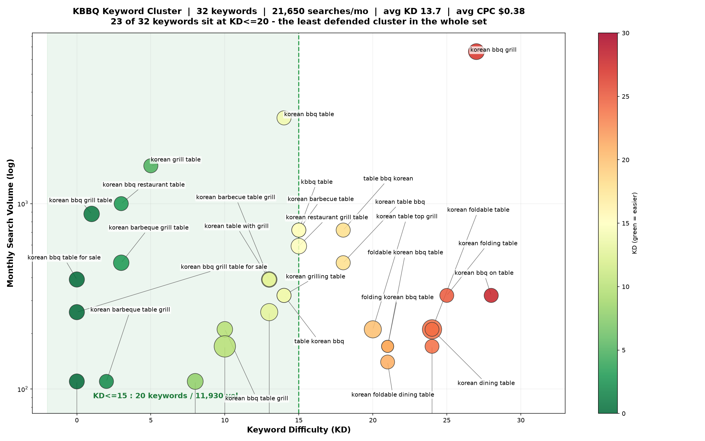
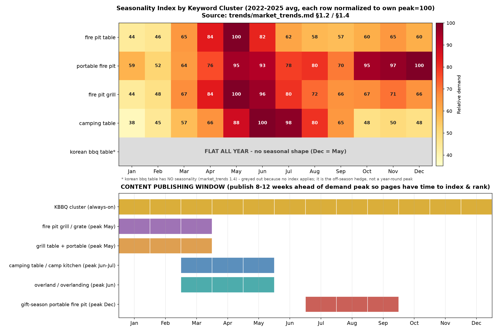

术语速查 · 看不懂的英文缩写点这里
- SEO
- 搜索引擎优化，让网页在 Google 自然排名（非广告位）里尽量靠前。
- KD / Keyword Difficulty
- 关键词难度，0–100 的分数，越低越容易排到 Google 首页；越高说明头部被大品牌占死、很难挤进去。
- Volume / 搜索量
- 每月有多少人在 Google 搜这个词。
- CPC
- 点一次广告要花的钱（Cost Per Click）。CPC 高通常说明这个词商业价值高、有人愿意为它出广告费。
- Intent / 搜索意图
- 用户搜这个词想干嘛：Transactional=想买、Commercial=比价挑选、Informational=找信息学知识。
- SERP
- 谷歌搜索结果页（Search Engine Results Page），就是你搜完看到的那一整页（含视频位、购物位、问答等）。
- long-tail / 长尾词
- 更长更具体、搜的人少但竞争也小的词（如 korean bbq table for sale）。
- 快赢词
- 本报告口径：搜索量够大、难度（KD）又低，能较快排上去的词。
- landing page / 落地页
- 用户点搜索结果进来第一眼看到的那个页面，通常是集合页或产品页。
- backlink
- 外部网站指向你的链接，是 Google 判断网站权重高低的重要依据。
- H1 / H2
- 网页标题层级。H1 是最大的主标题（一页一般只有一个，Google 判断这页讲什么最看它），H2 是次级小标题。
- alt
- 图片的文字描述，写在代码里，给搜索引擎和读屏软件（视障用户）看。
- Breakout / 飙升
- Google Trends 的标记，指某个词增长超过 5000%。
- KBBQ
- 韩式烤肉（Korean BBQ）。
- PDP
- 商品详情页（Product Detail Page），单个产品的售卖页面。
- hero
- 网页首屏最上方的大图 / 主视觉区。
- SKU
- 一个独立在售的商品 / 规格（如同款不同颜色算不同 SKU）。
- grill grate
- 架在火上的烤网 / 烤架。
- griddle
- 平底铁板煎盘（炒饭煎蛋用），区别于格栅烤网。
- fire pit
- 火盆，装柴火 / 炭火的户外火盆容器。
- overlanding
- 越野自驾露营，开改装车深入无人区。
- braai
- 南非式烧烤，指「聚会」本身。
- Cloudflare
- 网站常用的防爬虫 / 防攻击拦截服务，会挡掉机器人访问。
0取数纪律与口径声明（先看，涉及三处口径修正）
| 项目 | 简报口径 | 实际核对结果 | 说明 |
|---|---|---|---|
| 谷歌关键词数量 | 240 个 | 218 个 | 「谷歌关键词」sheet 共 263 行，其中 7 行是重复插入的表头行（位于第 34/70/103/139/182/215/228 行），另有 38 行是无指标的分组标题与手写便签。带完整 Volume/KD/CPC 的有效关键词 = 218 个，0 重复，总搜索量 186,630/月 |
| YouTube 关键词行数 | 1,237 行 | 396 个唯一词 | sheet 的 max_row 声明为 1238（简报的 1237 由此而来），但实际有内容的单元格仅 439 个。B/C/D 三列关键词单元格 414 个，去重后 396 个 |
| KBBQ 词群搜索量 | 43,300 | 21,650/月（32 个词） | 用正则跨全部 topic 检索，命中 32 词全部落在 korean bbq table related 这一 topic 内，合计 21,650。43,300 恰为 21,650 的两倍，疑为重复计数 |
这不影响任何结论方向——KBBQ 依然是全套词里最好打的一块。但对甲方交付时数字必须准确。
1搜索需求地图

| topic 簇 | 词数 | 总搜索量/月 | 平均 KD | 中位 KD | 平均 CPC | 最大单词量 | 主导意图 |
|---|---|---|---|---|---|---|---|
| fire pit table | 32 | 48,220 | 25.3 | 26.5 | $0.72（约 ¥5，下同按 1 美元≈7.2 元） | 9,900（fire pit in a table） | Transactional 91% |
| camping table | 30 | 32,450 | 27.4 | 29.5 | $0.32 | 3,600（foldable camping table） | Commercial 67% |
| camp kitchen | 41 | 27,200 | 21.8 | 21.0 | $0.32 | 4,400（camp kitchen） | Transactional 63% |
| grill table | 30 | 23,660 | 25.1 | 25.0 | $0.50 | 4,400（outdoor grill table） | Transactional 90% |
| fire pit grill | 32 | 21,860 | 15.3 | 16.0 | $0.57 | 4,400（fire pit grill） | Transactional 94% |
| korean bbq table | 32 | 21,650 | 13.7 | 14.0 | $0.38 | 6,600（korean bbq grill） | Transactional 53% |
| family camping | 10 | 6,410 | 20.0 | 20.0 | $0.44 | 2,400 | Informational 50% |
| overland | 11 | 5,180 | 10.8 | 8.0 | $0.46 | 2,400（overland gear） | Commercial 82% |
| 合计 | 218 | 186,630 | 20.8 | — | $0.46 | — | Transactional 64% |
三条读表结论
① 量最大的两簇恰好是最难的两簇
fire pit table（48,220）和 camping table（32,450）合计占总盘 43%，但平均 KD 分别是 25.3 / 27.4，是八簇里最高的两个。反过来，KD 最低的三簇——overland(10.8)、korean bbq table(13.7)、fire pit grill(15.3)——合计只有 48,690（26%）。搜索量和难度在这个品类里是正相关的，没有「又大又软」的词。
② 意图结构极度偏交易端，信息类词几乎不存在
218 个词里 Transactional 139 个（127,450 vol，占 68% 搜索量），Commercial 68 个，Informational 只有 10 个（5,580 vol，3%）。
这套词表几乎不支持「靠博客拉自然流量」的打法。能拿来写博客的只有 10 个词，且其中量最大的两个是露营食谱。做内容营销必须去 YouTube 侧取题，Google 这边应该把力气放在集合页和产品页上。
③ SERP 形态告诉你 Google 认为这是个「看图看视频比价」的品类
| SERP 特征 | 出现词数 | 占比 | 覆盖搜索量 |
|---|---|---|---|
| Related searches | 215 | 99% | — |
| Video（含 carousel / Short videos） | 212 | 97% | 176,240 |
| Image / Image pack | 200 / 185 | 92% / 85% | — |
| Popular products（Google 购物模块） | 194 | 89% | 163,040 |
| Reviews（富摘要星级） | 148 | 68% | 108,300 |
| Sitelinks | 137 | 63% | — |
| Discussions and forums（Reddit 等） | 104 | 48% | 58,050 |
| People also ask | 84 | 39% | 70,160 |
| Explore brands | 25 | 11% | 21,510 |
| AI Overview | 4 | 2% | 3,750 |
① 97% 的词 SERP 里有视频位 → 每个要打的词都该配一条 YouTube 视频，视频本身就是第二条入口。
② 89% 的词有 Popular products 购物模块 → Merchant Center feed 的优先级高于任何一篇博客（Merchant Center＝把商品目录上传给 Google 的后台，feed＝这份商品目录）。产品 feed 没配好，等于放弃了首屏最大的一块位置。
③ 48% 的词带 Discussions and forums → Reddit 在这个品类的 SERP 里是常驻。结合 VOC 报告记录的「reddit.com 对该出口 IP 全面 403」，这块只能靠人工运营，但值得单独立项。
1.3 机会气泡图（搜索量 × 难度 × CPC）

| KD 区间 | 词数 | 搜索量 | 平均 CPC | 判断 |
|---|---|---|---|---|
| 0–10 | 36 | 18,440 | $0.44 | 立刻做 |
| 11–15 | 28 | 16,370 | $0.47 | 立刻做 |
| 16–20 | 38 | 18,750 | $0.46 | 第二批 |
| 21–30 | 82 | 92,750 | $0.47 | 量都在这儿，但要 6–12 个月 |
| 31–50 | 34 | 40,320 | $0.46 | 红海，见第 3 节 |
2快赢清单（KD ≤ 15 且 Volume ≥ 200）
筛出 55 个词，合计 33,770 搜索量/月（占总盘 18%，但平均 KD 仅 10.4）。这 55 个词不该做成 55 个页面，按语义聚类收敛成 8 个落地页 + 1 个应剔除项。
| 页面簇 | 覆盖词数 | 合计搜索量 | 平均 KD | 建议页面类型 |
|---|---|---|---|---|
| B. KBBQ 桌 | 16 | 11,430 | 9.3 | 集合页 + 专属 PDP |
| F. 露营/房车桌 | 5 | 4,290 | 12.4 | 集合页 |
| C. Camp kitchen | 8 | 4,250 | 9.8 | 集合页 + 1 篇指南 |
| A. 烤网/炉排配件 | 8 | 4,240 | 7.0 | 配件 PDP |
| G. 火盆+烤炉二合一 | 6 | 3,340 | 10.8 | 主 PDP / 集合页 |
| H. Grill table | 5 | 2,580 | 12.6 | 集合页 |
| E. 火盆桌形态词 | 3 | 1,960 | 12.0 | 集合页（谨慎，见下） |
| D. Overland | 3 | 680 | 3.0 | 场景集合页 |
| 1 | 1,000 | 14.0 | 剔除 |
family summer camp（1,000 vol / KD 14 / CPC $1.37（约 ¥10），全表最高）。这是「给孩子报名夏令营」的意图，不是露营装备。它的 SERP 特征是 Sitelinks, Image pack, Related searches——没有 Popular products、没有 Reviews，是纯本地服务型 SERP。CPC 高正是因为夏令营机构在抢。放进关键词表是误采，投它等于给夏令营行业送钱。2.1 aroundfire.co 站点资产实勘结果
2026-07-21，curl 实取 sitemap + 页面 DOM
| 资产 | 实测数量 | 明细 |
|---|---|---|
| 集合页 | 仅 3 个 | /collections/frontpage、/collections/grill-fire-pit-tables、/collections/accessories |
| 产品页 | 11 个 | gather-lite / gather-grande / multifunctional-tabletop / kbbq-style-grill-grate / camping-stove-1 / bbq-tongs-1 / extension-leg-1 / light-stand / replacement-fire-mesh-1 / cast-iron-griddle / aluminum-foil-hot-pot |
| 内容页 | 25 个 | 含 /pages/compare-tables、/pages/the-original-4-in-1-camp-table、/pages/how-to-use、/pages/tech、/pages/faq |
| 博客 | 0 篇文章 | /blogs/news 存在但完全为空，页面仍留着 Shopify 默认占位文案 Add a short description for your blog.；sitemap_blogs_1.xml 里只有博客首页 URL，没有任何文章 URL |
| 首页 H1 | 0 个 | 实测 <h1> 标签数 = 0。首页 title = AroundFire: The Portable Grill Table Fire Up Any Gathering（含 portable ✅、grill table ✅、不含 korean bbq / kbbq ❌） |

Less Hassle. More Fun. 实测是 H3、Two Sizes of Tables 是 H4，Hero 主标题的文本节点 tagName = DIV。而首页正是品类词的主要落地页。
/collections/grill-fire-pit-tables 里只有 2 个产品。快赢清单里 7 个词需要的集合页，现在根本不存在——所以这批快赢是真的快。
table，也没有任何一个 KBBQ 集合页承接（三个路径实测全部 404）。TOP 10 快赢清单（可直接执行）
| # | 关键词 | Vol | KD | CPC | 落地页类型 | aroundfire.co 现状（实勘） | 建议 Title / H1 |
|---|---|---|---|---|---|---|---|
| 1 | korean bbq table | 2,900 | 14 | $0.32 | 新建集合页 /collections/korean-bbq-table | ❌ 无。/collections/kbbq、/collections/korean-bbq、/collections/kbbq-table 三个路径实测全部 404。全站唯一 KBBQ 资产是 $37 配件页（title 不含 "table"） | Title: Korean BBQ Table for Outdoor & Home | Portable KBBQ Grill Table – AroundFireH1: The Portable Korean BBQ Table That Packs Up in 30 Seconds |
| 2 | camp camp kitchen | 1,900 | 5 | $0.31 | 集合页 /collections/camp-kitchen | ❌ 无。全站无 camp kitchen 相关集合或页面 | Title: Portable Camp Kitchen Table – Grill, Fire Pit & Prep Surface in One | AroundFireH1: Your Entire Camp Kitchen. 16 lbs. One Table. |
| 3 | grill fire pit | 1,900 | 10 | $0.58 | 已有集合页优化 | ⚠️ 部分覆盖。/collections/grill-fire-pit-tables 已存在，但词序 grill fire pit 未在 title/H1 中出现 | Title 补充变体: Grill Fire Pit Combo – Outdoor Grill Table & Fire Pit Table | AroundFireH1: Grill, Fire Pit & Table — One Piece of Gear |
| 4 | camper table | 1,900 | 14 | $0.33 | 新建集合页 /collections/camper-table | ❌ 无。11 个产品页无一针对 RV/camper 场景 | Title: Camper Table – Collapsible RV & Camper Table with Built-In Grill | AroundFireH1: A Camper Table You Can Actually Cook On |
| 5 | korean grill table | 1,600 | 5 | $0.32 | 同 #1 集合页（变体词） | ❌ 无 | 铺进 #1 集合页 H2：Korean Grill Table Built for the Backyard and the Campsite |
| 6 | fire pit grill grate | 1,600 | 4 | $0.42 | 配件 PDP + 小集合页 /collections/grill-grates | ⚠️ 有产品无页面聚合。三个 SKU 散落在 /collections/accessories（title 仅 Accessories – AroundFire，无任何关键词） | Title: Fire Pit Grill Grate – Adjustable Grill Grates for Fire Pits | AroundFireH1: Fire Pit Grill Grates That Fit Your Fire, Not Someone Else's |
| 7 | fire pit coffee table | 1,000 | 9 | $0.84 | 集合页（谨慎） | ❌ 无 | ⚠️ 此词属 patio 家具意图。AroundFire 是 16 lbs 便携桌，不是 coffee table。CPC $0.84 虽高，但做了会来错人群。建议只做一篇对比型内容页（Fire Pit Coffee Table vs Portable Fire Pit Table），不做集合页 |
| 8 | portable grill table | 1,000 | 13 | $0.32 | 首页 + 现有集合页强化 | ✅ 已覆盖。首页 title 原文即含 The Portable Grill Table | 补首页 H1（当前为 0 个 H1，必须补）: The Portable Grill Table That Sets Up in 30 Seconds |
| 9 | korean bbq restaurant table | 1,000 | 3 | $0.32 | 同 #1 集合页 H2 / FAQ | ❌ 无 | 铺进 #1 集合页 FAQ：Is this the same table Korean BBQ restaurants use? —— 这是 KBBQ Bros 用户评价里反复出现的动机 |
| 10 | collapsible camp table | 1,000 | 14 | $0.32 | 同 #4 集合页（变体词） | ❌ 无 | 铺进 #4 集合页 H2：Collapsible Camp Table — 16 lbs, Folds Flat, No Tools |
建议新建的 4 个集合页（覆盖 55 词中的 42 个）
| 优先级 | 新建页面 | 覆盖词数 | 覆盖搜索量 | 平均 KD |
|---|---|---|---|---|
| P0 | /collections/korean-bbq-table | 16 | 11,430 | 9.3 |
| P1 | /collections/camper-table（露营/RV 桌） | 5 | 4,290 | 12.4 |
| P1 | /collections/camp-kitchen | 8 | 4,250 | 9.8 |
| P2 | /collections/grill-grates（烤网配件） | 8 | 4,240 | 7.0 |
| P3 | /collections/overland-table（词量小但 KD=3，几乎白送） | 3 | 680 | 3.0 |
| — | 现有 /collections/grill-fire-pit-tables 优化 | 11 | 5,920 | 11.6 |
3战场取舍分析
3.1 【别碰】红海词：39 个词 / 44,610 搜索量
判定口径：KD ≥ 30。这批词占总搜索量 24%，但平均 KD 34.9。
| 别碰的词群 | 代表词（Vol / KD） | 依据 |
|---|---|---|
| fire pit table 主词群 | table fire pit 2,900/35、outdoor table with fire pit 1,000/36、fire pit table for patio 720/34、small fire pit table 480/32 | 这是 patio 家具赛道。Breeo hero 副标直接写 Built for the Backyard、Solo Stove 首屏写 Build your dream backyard——两家都把 backyard 写进首页最高层级文案，且价格带是 AroundFire 的 2–8 倍，页面权重与外链资产不在一个量级。更要命的是趋势实测：fire pit table 的 4 月指数 2022→2025 从 23 跌到 16（-30%）。这是一个在缩、且被高客单品牌焊死的盘子。 |
| camping table 折叠词群 | foldable camping table 3,600/38、folding camping table 3,600/34、camping folding table 2,900/38 | 这批词平均 CPC 只有 $0.32，是全表最低档之一。低 CPC + 高 KD = 典型的白牌红海：Amazon 上一堆 $30–60（约 ¥216–430）的铝合金折叠桌在打，$189–239（约 ¥1,360–1,720）的产品进去是错配。VOC 记录的价格锚证据支持这个判断。用这批词引来的流量，客单预期是错的。 |
| grill table / camp kitchen 泛词 | grill table 3,600/39、bbq grill on table 1,300/45、camping kitchen 3,600/40、camp kitchen stove 320/43 | KD 39–45，是全表最难的一档。grill table 这种两词泛词无法承载具体购买意图 |

Built for the Backyard 写死在 hero 副标（官网首屏实勘原件），Solo Stove 首屏同样写 Build your dream backyard。两家的页面权重与外链资产都不在 AroundFire 的量级，正面抢 fire pit table 主词是纯消耗。（Solo Stove 首屏截图本次未取得——抓取返回 Cloudflare 验证页，未以该页冒充首屏）outdoor grill table（4,400 vol / KD 32 / CPC $0.80）不建议完全放弃。它 KD 32 刚过红海线，但 CPC 是全表高位（品类均值 $0.46），说明商业价值真实存在。建议：不投 SEO，投 Google Shopping——它 SERP 带 Popular products，购物位比自然位好拿得多。3.2 【该抢】便携 TABLE 空位 —— 但必须先说清一个矛盾
竞品报告的结论是「便携 GRILL 被 NOMAD 焊死、便携 TABLE 无人占据」。核对原文证据后成立。但关键词数据给出了一个必须正视的反证：
| 「portable」在这套词表里的真实体量 | 数值 |
|---|---|
含 portable 的关键词 | 仅 7 个 |
| 合计搜索量 | 4,440/月（占总盘 2.4%） |
| 平均 KD | 22.1 |
| 其中 KD≤15 的 | 只有 1 个：portable grill table 1,000 vol / KD 13 |
含 fold/collapsible 的词 | 36 个 / 26,150 vol，但平均 KD 26.3，KD≤15 的只剩 4 个词 / 2,080 vol |
原因很简单——空位之所以空，正是因为没人搜。这与趋势报告的核心结论完全一致：「这不是一个搜索需求可以被捕获的品类，是一个需求必须被创造的品类」。
所以「该抢」的正确打法不是抢
portable xxx 这几个词，而是：① 占住那 1 个能打的词 ——
portable grill table（1,000 vol / KD 13 / CPC $0.32），做成集合页，这是便携叙事在 Google 上唯一的低成本落脚点。② 把「便携」做成所有页面的差异化文案，而不是关键词目标 —— 在
korean bbq table、camping grill table、fire pit and grill combination 这些有量又好打的词上排名，然后用页面文案（16 lbs〔磅，约 7.3 公斤〕/ 30 秒展开）去做转化端的差异化。用别人的词进来，用自己的定位成交。③ 便携认知靠 YouTube 和达人内容建立，不靠 Google 自然搜索（见第 5 节：YT 侧
Portable 主题有 30 个词，且 8 个是 review/best 类对比词）。
所有 table 相关可攻词（KD≤15 且 Vol≥200，共 29 个 / 20,260 vol）
| 关键词 | Vol | KD | CPC | 归属簇 |
|---|---|---|---|---|
| korean bbq table | 2,900 | 14 | $0.32 | KBBQ |
| camper table | 1,900 | 14 | $0.33 | 露营桌 |
| korean grill table | 1,600 | 5 | $0.32 | KBBQ |
| portable grill table | 1,000 | 13 | $0.32 | 便携（唯一） |
| korean bbq restaurant table | 1,000 | 3 | $0.32 | KBBQ |
| collapsible camp table | 1,000 | 14 | $0.32 | 露营桌 |
| fire pit coffee table | 1,000 | 9 | $0.84 | 火盆桌形态 |
| korean bbq grill table | 880 | 1 | $0.40 | KBBQ |
| kbbq table | 720 | 15 | — | KBBQ |
| korean barbecue table | 720 | 15 | $0.32 | KBBQ |
| aluminum camping table | 590 | 8 | $0.37 | 露营桌 |
| korean restaurant grill table | 590 | 15 | $0.40 | KBBQ |
| camping grill table | 480 | 9 | $0.31 | grill table |
| collapsible camper table | 480 | 13 | $0.37 | 露营桌 |
| fire pit with coffee table | 480 | 14 | $0.84 | 火盆桌形态 |
| bar height fire pit table | 480 | 13 | $0.66 | 火盆桌形态 |
| korean barbeque grill table | 480 | 3 | $0.40 | KBBQ |
| korean table with grill | 390 | 13 | $0.32 | KBBQ |
| korean bbq table for sale | 390 | 0 | $0.38 | KBBQ |
| korean barbecue table grill | 390 | 13 | $0.40 | KBBQ |
| grill folding table | 390 | 14 | $0.27 | grill table |
| table barbecue grill | 390 | 14 | $0.34 | grill table |
| korean grilling table | 320 | 14 | $0.32 | KBBQ |
| camp kitchen tables | 320 | 11 | $0.39 | camp kitchen |
| table with bbq grill | 320 | 13 | $0.69 | grill table |
| camping table for grill | 320 | 13 | $0.31 | grill table |
| table korean bbq | 320 | 14 | $0.32 | KBBQ |
| korean table grill | 260 | 13 | $0.50 | KBBQ |
| kitchen camp table | 260 | 13 | $0.35 | camp kitchen |
| korean bbq table grill | 210 | 10 | $0.40 | KBBQ |
| overland table + overlanding table | 210+210 | 3 | $0.42 | overland |
附带发现：gather grill table（260 vol / KD 16 / CPC $0.94，全表第二高）是竞品品牌词。Gather Grills 起价 $1,999（约 ¥1.44 万），AroundFire $189–239——差 8–10 倍，做 vs 页 / alternative 页承接并不合理（人群不重叠，来的人买不起或看不上）。不建议投，此处仅作记录。
3.3 【核心机会】KBBQ 词群完整可攻词表

KD 分布：≤10 有 11 个词，11–20 有 12 个，>20 只有 9 个。KD≤15 的 20 个词合计 11,930 vol。
为什么现在该打（四条独立证据交叉）
- 零竞争：32 个词平均 KD 13.7，
korean bbq grill table=1、korean bbq table for sale=0、korean bbq grill table for sale=0、korean bbq grill table for home=0。 - 属性正在爆发（Google Trends 实测）：
foldable korean bbq table+1,300%、foldable kbbq tableBreakout、portable korean bbq table+100%、portable kbbq table+110%。 - 全年无淡季：
korean bbq table5 年月度指数在 5–16 间波动，无任何季节形状，12 月和 5 月一样高。这是唯一能补 11 月–次年 2 月火盆淡季的品类。 - 产品已经有了：AroundFire 的 KBBQ Style Grill Grate 只卖 $37，埋在配件区。不需要开模。
| # | 关键词 | Volume | KD | CPC | Intent | 优先级 |
|---|---|---|---|---|---|---|
| 1 | korean bbq grill | 6,600 | 27 | $0.42 | Commercial | ⚠️ 大词，二期 |
| 2 | korean bbq table | 2,900 | 14 | $0.32 | Transactional | ✅ 主词 |
| 3 | korean grill table | 1,600 | 5 | $0.32 | Info+Trans | ✅ |
| 4 | korean bbq restaurant table | 1,000 | 3 | $0.32 | Commercial | ✅ |
| 5 | korean bbq grill table | 880 | 1 | $0.40 | Transactional | ✅ |
| 6 | kbbq table | 720 | 15 | — | Commercial | ✅ |
| 7 | korean barbecue table | 720 | 15 | $0.32 | Transactional | ✅ |
| 8 | table bbq korean | 720 | 18 | $0.32 | Transactional | ○ |
| 9 | korean restaurant grill table | 590 | 15 | $0.40 | Commercial | ✅ |
| 10 | korean barbeque grill table | 480 | 3 | $0.40 | Transactional | ✅ |
| 11 | korean table bbq | 480 | 18 | $0.32 | Commercial | ○ |
| 12 | korean barbecue table grill | 390 | 13 | $0.40 | Transactional | ✅ |
| 13 | korean bbq table for sale | 390 | 0 | $0.38 | Transactional | ✅ 最易 |
| 14 | korean table with grill | 390 | 13 | $0.32 | Transactional | ✅ |
| 15 | korean bbq on table | 320 | 28 | $0.32 | Commercial | ✗ 剔除（SERP 带 Local pack 倾向查餐厅） |
| 16 | korean folding table | 320 | 25 | $0.31 | Commercial | ○ |
| 17 | korean grilling table | 320 | 14 | $0.32 | Transactional | ✅ |
| 18 | table korean bbq | 320 | 14 | $0.32 | Transactional | ✅ |
| 19 | korean bbq grill table for sale | 260 | 0 | $0.38 | Transactional | ✅ 最易 |
| 20 | korean table grill | 260 | 13 | $0.50 | Transactional | ✅ |
| 21 | korean bbq table grill | 210 | 10 | $0.40 | Transactional | ✅ |
| 22 | korean dining table | 210 | 24 | $0.65 | Commercial | ✗ 剔除（意图是韩式实木餐桌家具） |
| 23 | korean foldable table | 210 | 24 | $0.31 | Commercial | ○ |
| 24 | korean table top grill | 210 | 20 | $0.50 | Commercial | ○ |
| 25 | foldable korean bbq table | 170 | 21 | $0.22 | Commercial | ⭐ 趋势词 +1,300% |
| 26 | folding korean bbq table | 170 | 21 | $0.22 | Commercial | ⭐ 趋势词 |
| 27 | korean folding dining table | 170 | 24 | $0.31 | Commercial | ○ |
| 28 | outdoor korean bbq table | 170 | 10 | $0.81 | Commercial | ✅ 产品最贴 |
| 29 | korean foldable dining table | 140 | 21 | $0.31 | Commercial | ○ |
| 30 | korean barbeque table grill | 110 | 2 | $0.32 | Transactional | ✅ |
| 31 | korean bbq grill table for home | 110 | 0 | $0.37 | Transactional | ✅ |
| 32 | korean bbq table top | 110 | 8 | $0.42 | Transactional | ✅ |
四条执行判断
- 一个集合页吃掉 20 个词。
korean bbq table/korean grill table/korean bbq grill table/kbbq table… 这些是同一个搜索意图的拼写变体，Google 会把它们收敛到同一批结果。做一个高质量集合页（不是 20 个页面），把变体铺进 H2/FAQ/图片 alt 即可。 outdoor korean bbq table是最该单独做的一个词。170 vol 不大，但 KD 仅 10、CPC $0.81（是 KBBQ 群平均 $0.38 的 2.1 倍）——CPC 在告诉你这个词的商业价值远高于词群平均。而且它是唯一一个把「韩烤」和「户外」焊在一起的词，正好是 AroundFire 相对 KBBQ Bros（室内/后院收纳定位）的唯一结构性差异。- 趋势词现在量小，但必须提前占。
foldable/folding korean bbq table各 170 vol、KD 21、CPC 仅 $0.22。量小是因为爆发刚开始。正确做法是现在就把词写进已有集合页的 H2 和 FAQ，零边际成本，等量上来时排名已经在了。不要为它们单开页面。 korean bbq grill（6,600 vol，全群最大）是二期目标，不是一期。KD 27 是全群最高档，且 Intent 是 Commercial（比价阶段），Google 大概率给餐厅和 Amazon。一期先用低 KD 词把 KBBQ 主题的站点权威度做起来，二期再冲。
3.4 季节性排期：什么词几月开始铺

排期原则：SEO 页面从发布到进入排名需要 8–12 周，所以「铺内容的月份」= 需求峰值前 2–3 个月。
| 词群 | 需求峰值 | 内容铺设窗口 | 备注 |
|---|---|---|---|
| KBBQ 全簇（32 词） | 无峰值，全年平 | 全年常开，立刻开始 | 唯一填补 11 月–2 月真空的词群 |
| fire pit grill / grill grate 配件（8 词 4,240 vol） | 5 月（指数 100） | 1–3 月 | 1 月指数仅 44，是全年最淡，正好用来铺内容 |
| grill table / portable grill table（5 词） | 5 月 | 1–3 月 | 与上同批发布 |
| camping table / camper table / camp kitchen | 6–7 月 | 3–5 月 | ⚠️ 比火盆晚一个月，别和火盆混在一批发 |
| overland / overlanding table（3 词，KD 3） | 6 月 | 3–5 月 | KD 最低，见效最快 |
| portable fire pit 礼品季叙事 | 12 月（指数 100，比 5 月的 95 还高） | 7–9 月 | Q4 不该关预算，把叙事切成"送礼" |
4YouTube 关键词（396 词）怎么用
4.1 结构盘点
| 主题 | 词数 | 主题 | 词数 |
|---|---|---|---|
| camping | 62 | backyard | 18 |
| BBQ | 48 | overlanding | 14 |
| outdoor | 42 | overland | 14 |
| rv | 33 | open fire | 12 |
| cooking | 32 | group cooking | 7 |
| fire pit | 30 | family cooking | 7 |
| Portable | 30 | cozy campfire | 3 |
| camp | 25 | 合计 | 396 |
| Grill | 19 |
4.2 最重要的一条：YT 词和 Google 词几乎是两套语言
396 个 YT 词与 218 个 Google 词的精确重合只有 16 个（4%）。重合的 16 个：camping kitchen、camping kitchen setup、camping kitchen table、fire pit grill、fire pit grill combo、grill table、kbbq table、korean bbq grill table、outdoor grill table、overland camping gear、overland fire pit、overland gear、overland table、overlanding gear、overlanding gear list、portable grill table。
| 修饰词 | YouTube 词中出现 | Google 词中出现 |
|---|---|---|
| cooking | 127 | 1 |
| ideas | 45 | 0 |
| food | 35 | 0 |
| recipe | 26 | 0 |
| setup | 19 | 2 |
| review | 18 | 0 |
| shorts | 14 | 0 |
| best | 12 | 4 |
| vlog | 9 | 0 |
| how | 2 | 0 |
这解释了前面那个看似矛盾的发现——Google 词表里 Informational 只有 10 个词（3% 搜索量），不是因为用户没有学习需求，而是因为学习需求整个搬到 YouTube 去了。
直接含义：想做内容营销，选题必须从 YouTube 词表拿，不能从 Google 词表拿。Google 那边的 218 个词，96% 是拿来做集合页和产品页的，不是拿来写文章的。
4.3 按认知阶段分层（396 词分类结果）
| 阶段 | 词数 | 代表词 | 怎么用 |
|---|---|---|---|
| ④ 产品/装备（gear / setup / table / grill / kit） | 157 | overland table、best overland table、camping table with stove、camping gear reviews | 最接近购买。达人合作视频、产品展示视频的选题池。这里的词直接对应 SERP 里那 97% 的视频位——做出来的视频同时吃 YouTube 和 Google 两个入口 |
| ③ 场景/生活方式（vlog / recipe / trip / food） | 95 | family cooking vlog、campfire breakfast ideas、kbbq at home、backyard bbq setup | 需求创造层。趋势报告说这个品类"需求必须被创造"，这 95 个词就是创造需求的选题库。注意 group cooking + family cooking 共 14 个词——正对竞品报告指出的「一起做饭」空位 |
| ① 认知/教育（how / ideas / tips / method） | 59 | fire pit ideas for backyard、open fire cooking setup、rv camping for beginners | 顶部漏斗。做成 YouTube 长视频 + 站内博客双投（弥补 Google 侧 Informational 词只有 10 个的空白） |
| ② 评测/对比（review / best / vs） | 30 | portable grill review、best portable camping grill、best fold camping table | 最高商业价值。30 个词里 8 个属于 Portable 主题——这是「便携」叙事真正有搜索需求的地方。第 3.2 节说便携在 Google 上没量，但在 YouTube 的评测层有量。达人评测视频应该优先押这 30 个词 |
| ⑤ 纯品类词 | 55 | kbbq、campfire、overlanding、braai | 做 tag / 播放列表，不单独做视频 |
4.4 三条具体动作
- 先做「④产品装备 ∩ Google 快赢词」的交集视频——一鱼两吃。16 个重合词里，
overland table、portable grill table、korean bbq grill table、fire pit grill combo、camping kitchen table这 5 个同时是 Google 快赢词（KD≤15）和 YT 装备词。97% 的 Google SERP 带视频位——为这 5 个词各做一条视频，等于同时占住 YouTube 排名和 Google 首屏视频位。这是 ROI 最高的一批内容。 Portable主题的 30 个 YT 词是便携定位的唯一流量出口。Google 侧含portable的词只有 7 个 / 4,440 vol，撑不起定位。但 YT 侧Portable主题独立成组、30 个词、其中 8 个是 review/best 对比词。便携认知在视频里建，不在搜索里建。达人 brief 应直接按这 30 个词写。group cooking/family cooking14 个词是竞品盲区，必须自己做。8 家竞品里只有 Gather Grills 一家把「一起动手做饭」写成产品定义，而它是 210–650 lbs（约 95–295 公斤）、$1,999+ 的固定后院设备。YT 词表里family cooking together、group cooking table、group camping and cooking这些词没有对应的品牌内容。这正好是 AroundFire 的右下象限站位在内容侧的落点。
bbg grill、campig、chiken、coooking、firt pit、opren fire、oputdoor、outdoort、smkeless、volg、frinends。这些不是长尾词，是录入错误。若这份表要拿去投 YouTube Ads 或做批量选题，必须先清洗，否则会产生零曝光的无效词组。附数据处理与复现
| 项目 | 内容 |
|---|---|
| 源文件 | 甲方提供的关键词整理 xlsx |
| 处理方式 | Python 3 + pandas + openpyxl，PYTHONUTF8=1 |
| 清洗规则 | 剔除 7 行重复表头（topic=='topic'）→ topic 列 ffill → Volume/KD/CPC 转数值 → 保留 Keyword 非空且 Volume 非空的行 |
| 有效样本 | Google 218 词（0 重复） / YouTube 396 唯一词 |
| 图表 | matplotlib 3.11.1 + adjustText |
本节未完成的部分：竞品 SEO 现状逐站对标（外链、收录量、页面权重）本次未采集，故不给竞品排名断言。